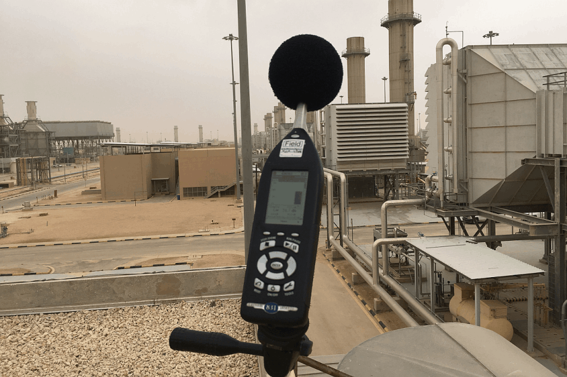

AI Website MakerFor industrial situations, the two main concerns are community annoyance and protecting the hearing of employees. For community noise, short term measurements with a listener present is your best bet, following ANSI S12.9 Part 3. One Sound Level Meter is usually sufficient, but measurements should be taken during time when the most noise is being generated. The goal should be to get measurements at a known distance, with as little obstruction between you and the noise maker as possible. Please feel free to contact us if you need advice on how to proceed.
If your concern is for the health and safety of your employees, that goes into the realm of industrial hygiene. For these types of applications there are two main ways to collect data. The first is to simply measure the work environment with a Sound Level Meter and compute what resulting exposure is. The second is to provide your employees with dose response meters – specialty equipment designed to measure the exact noise exposure over the course of a day.

AI Website Maker